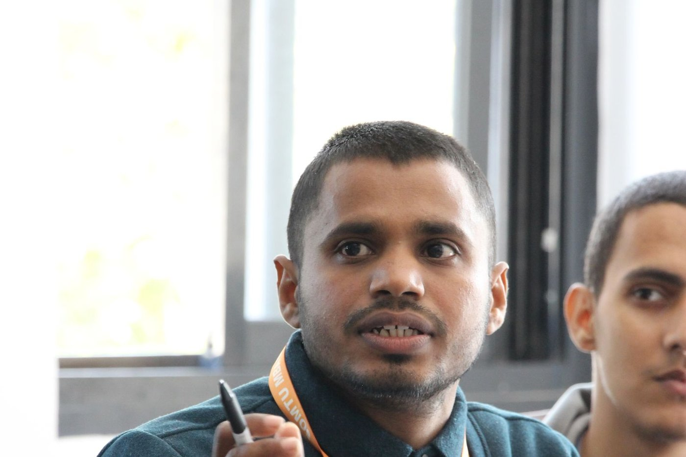
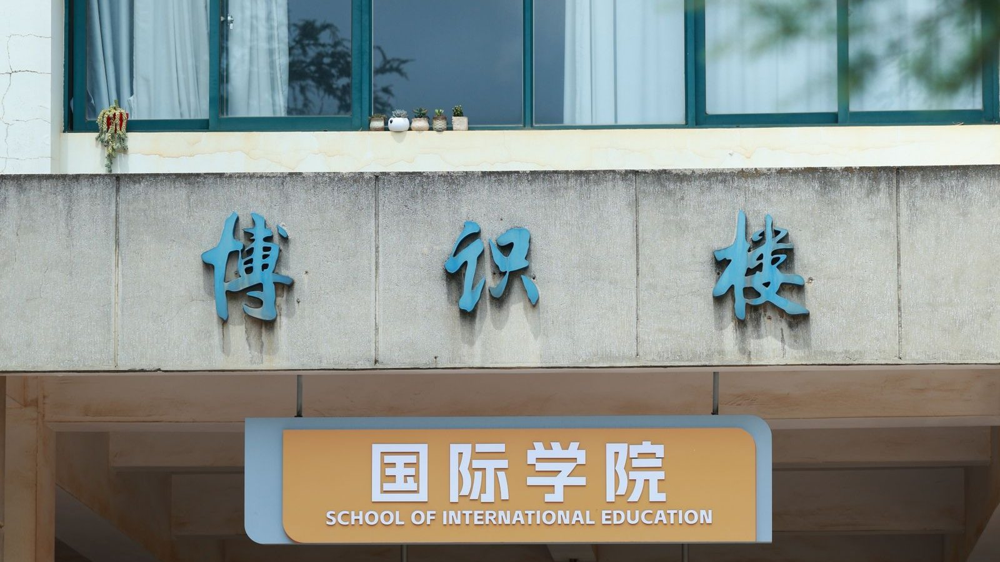
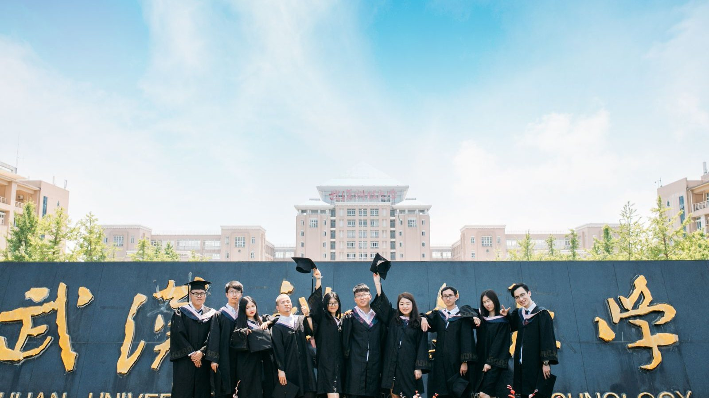

Tsinghua Yuan, Tsinghua University, Beijing. Photo: William Xin / Pexels — free to use under the Pexels License.
来华留学，不是退路，是前线。
先别问"值不值"，先问"你敢不敢开口"
EN — You ask me whether studying in China is worth it. I will ask you something first: when was the last time you stood in front of twenty people and finished a whole paragraph in a language you do not fully control? You cannot remember, can you. Not because you are incapable — because nobody ever pushed you to that edge. Sixteen years in classrooms, and you still need three deep breaths before you raise your hand. You call that being steady. I call it hiding. And hide long enough, people go soft.
中文 — 你问我，来中国留学值不值。我先问你一句：你上一次当着二十个人的面，用一门不熟练的语言说完整一段话，是什么时候？想不起来，对吧。不是你不行，是你从来没被逼到那个份上。你在自己国家的教室里坐了十六年，举手要鼓三次勇气，发言要先在心里默念两遍。你把这叫"稳"。我告诉你，这不叫稳，这叫躲。躲久了，人就软了。
EN — So stop calculating tuition, rankings and employment rates. Those numbers are for people already on the field. You have not even walked on. Say this line out loud with me — do not whisper it, say it, word by word:
中文 — 所以别急着算学费、算排名、算就业率。那些数字是给已经在场上的人看的。你现在连场都没上。先把这句话跟我喊出来，一个字一个字砸出去：
DRILL 01 — "China is not my backup plan. It is my front line."
DRILL 01 —— 不是备选，是前线。
语言不是知识，是肌肉
EN — Ten years of English, and most people still cannot open their mouths — because they studied it as knowledge. Vocabulary lists, grammar rules, test papers, then forget all of it. It is exactly the same for you and Chinese. Studying Chinese in your own country means studying knowledge about Chinese. Studying Chinese in China means training the muscle of Chinese. Two completely different things.
中文 — 中国人的老毛病，学英语学了十年，还是说不出口。为什么？因为全当知识在学。背单词、抠语法、做题，考完就忘。汉语对你们，一模一样。你在自己国家学汉语，学的是"关于汉语的知识"；你来中国学汉语，练的是"汉语这块肌肉"。这是两件完全不同的事。
EN — Knowledge can be memorised. Muscle can only be trained. To train it you must speak out loud. Speaking out loud means sounding bad. Sounding bad means losing face. The Three Mosts Method — loudest, clearest, fastest. It is not about elegance. It is about training your mouth until it stops asking your brain for permission. Repeat one sentence thirty times until your tongue moves on its own. That is what blurting it out really means.
中文 — 知识可以背，肌肉只能练。练就必须出声，出声就必须难听，难听就必须丢脸。三最口腔肌肉训练法——最大声、最清晰、最快速。不是让你优雅，是让你把嘴巴练到不听大脑指挥，直接反应。一句话重复三十遍，练到舌头自己会走，练到你不用想就出来，这叫脱口而出。
EN — And remember this: the sentence is everything. Do not memorise word lists; memorise sentences. A word list is dead. A sentence is usable. One sentence you can actually deploy today beats fifty words you will never say.
中文 — 而句子就是一切。不要背词表，背句子。词表是死的，句子是能用的。你今天学会一句能用的，胜过背五十个用不上的词。

Answering under pressure is the drill — not the exam. Photo: MBA Classroom / Pexels — free to use under the Pexels License.
DRILL 02 — "I don't study Chinese. I train it."
DRILL 02 —— 我不是在学汉语，我在训练它。
面子是最贵的学费
EN — Parents keep telling me: my child is introverted, afraid of making mistakes, afraid of being laughed at. I say — good. Bring them to China. Because here they will make mistakes. They will order the wrong dish. They will walk the wrong way. They will speak in class and every person in the room will hear that the tone is off. There is nowhere to hide.
中文 — 很多家长跟我讲，孩子内向，怕出错，怕被笑。我说，那正好，来中国。因为在这里，你一定会出错。你点菜会点错，你问路会问反，你上课发言，全教室的人都听得出你的声调不对。你无处可躲。
EN — When you cannot hide, you face it. Face it once, and your skin gets one layer thicker. Thick enough, and you discover something: nobody actually cares that you said it wrong. They only care whether you dared to say it. Put your face in your pocket. Close the pocket, and you are free.
中文 — 躲不掉，就只能面对。面对一次，脸皮厚一层。厚到最后你会发现——原来没人真的在乎你说错。他们只在乎你敢不敢说。把脸皮放进口袋里。口袋一关，你就自由了。
EN — No school puts that in its prospectus. But it is the real thing you take home: you stop being afraid to open your mouth. And a person who is not afraid to open his mouth will meet twice as many chances in his life.
中文 — 这是学费买不到的东西。任何一所学校都不会在招生简章里写，但它是你来这一趟真正的收获：你从此不怕开口。一个人一旦不怕开口，他这辈子能吃到的机会，翻倍。
中国不是备选方案
EN — Too many people treat studying in China as "the second choice after I failed to get into Europe or America." That sentence grates on me. You call the world's second-largest economy, the largest manufacturing base on earth, and a market that more than 190 countries do business with — a backup?
中文 — 我见过太多人把来华留学当成"去不了欧美之后的第二选择"。这话我听着刺耳。你把世界第二大经济体、全球最大的制造业基地、一百九十多个国家都在做生意的市场，叫"备选"？
EN — Your future clients, suppliers and partners are here. The people you meet, the cities you walk through, the dialects you learn to catch — four years here builds assets you cannot buy back later. Studying abroad was never about buying a diploma. It is about moving yourself to a place with denser information, more opportunity and harsher competition, and being forced to grow up.
中文 — 这里有你未来二十年的客户、供应商、合作伙伴。你在这里读四年书，认识的人、走过的城市、听得懂的方言，是你回不去的资产。留学从来不是买一张文凭。是把自己挪到一个信息更密、机会更多、竞争更狠的地方，然后被逼着长大。

School of International Education — the front door most foreign students never hear about. Photo: Andy Lee / Pexels — free to use under the Pexels License.
DRILL 03 — "I came to China to win, not to hide."
DRILL 03 —— 我来中国是来赢的，不是来躲的。
给三类人的话
TO THE STUDENT STILL HESITATING / 给还在犹豫的学生
EN — You are not short of intelligence. You are short of one chance to be dropped into deep water. Do not wait until twenty-five to discover that the one thing you cannot do is speak in public. Come now. Training your mouth at twenty-five costs ten times what it costs at fifteen.
中文 — 你不缺聪明，你缺一次被丢进深水区的机会。别等到二十五岁才发现，你唯一不会的东西，是当众开口。现在就来，越早越好。二十五岁练嘴，比十五岁练嘴，贵十倍。
TO THE PARENT PAYING THE BILL / 给掏钱的家长
EN — The most expensive thing you can buy your child is not a diploma. It is a child who is not afraid of things. Diplomas depreciate. People do not. You are not sending him abroad to collect a label; you are sending him to build a capability.
中文 — 你给孩子买的最贵的东西，不该是一张文凭，该是一个不怕事的孩子。文凭会贬值，人不会。你今天送他出国门，是送他去练一身本事，不是送他去换一个好看的标签。
TO THE PEERS STILL WAITING / 给还在观望的同行
EN — Stop selling study-in-China as "the cheap option." The more you call it a fallback, the more parents believe it is one. It is the front line. You have to believe it before you can sell it.
中文 — 别再把来华留学卖成"便宜选项"。你越把它说成退路，家长越觉得它是退路。它是前线。你得先信，你才卖得动。
七天训练清单（今天就开始）
EN — Do not wait for the semester. Do not wait until you are ready. "Ready" is a lie people tell themselves.
中文 — 不要等开学。不要等准备好。准备好了这句话是骗人的。
EN — After seven days you will learn one thing: you were never unable. You simply never trained.
中文 — 七天之后你会发现一件事：你不是学不会，你是从来没练过。
最后一句话
EN — There is a Chinese saying: opening your mouth is already a victory. I will add one line to it — before you open your mouth, do not talk about plans. A plan is a map for people who can already move. Draw the most beautiful map in the world for someone who dares not speak, and he still takes zero steps.
中文 — 中国有句话，叫"开口就是胜利"。我加一句：开口之前，先别谈规划。规划是给已经能动的人画的路线图。一个连话都不敢说的人，路线图画得再漂亮，也走不出去一步。
DRILL 04 — "Speak up. The world is already listening."
DRILL 04 —— 大声说。世界早就在听了。

Graduation season at a university in Wuhan. Photo: CLMCDK FEJCN / Pexels — free to use under the Pexels License.
| Image | Photographer | Licence |
|---|---|---|
| Tsinghua University gate | William Xin | Pexels License |
| Seminar discussion | MBA Classroom | Pexels License |
| School of International Education | Andy Lee | Pexels License |
| Wuhan graduation | CLMCDK FEJCN | Pexels License |
All four photographs come from Pexels and are free to use commercially without attribution; they are credited here anyway.
Measurements in this article are limited to ORIGIN's own verifiable figures — a 810-university database, 535 bilingual admission summaries and a 22-stage application workflow. No third-party industry statistics are cited.
About ORIGIN
ORIGIN (NANJING) Education Technology Co., Ltd. works with international students applying to Chinese universities — university shortlisting, document review, CSC scholarship applications, and visa support. Learn more at www.originedu.net.
Talk to us on WhatsApp: +852 4702 6670 · +86 139 1391 7777